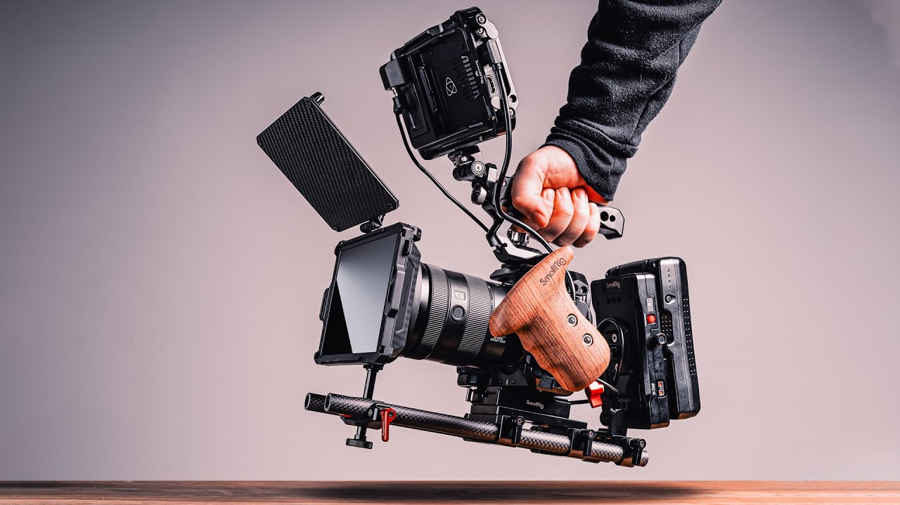

Kumpulan Materi
Kelas Lainnya
Pendahuluan: Apa itu sinematografi?

Pengertian Sinematografi
Dalam kamus besar bahasa Indonesia [KBBI], Sinematografi adalah tenik perfilman atau suatu teknik pembuatan film. Istilah sinematografi sendiri merupakan kata serapan dari bahasa Inggris, Cinematography dengan definisi yang kurang lebih sama. Secara etonomologis, sinematografi berasal dari bahasa Yunani dan merupakan gabungan dari dua kata, kinema atau κίνημα yang berarti Gerakan dan Graphein atau γράφειν yang berarti merekam. Dengan demikian, sinematografi bisa diartikan sebagai seni menulis dengan gerakan atau suatu metode penciptaan gambar yang bisa dilihat di layar. Setiap shot atau satu bidikan akan membentuk narasi kohesif, yang ketika disusun akan membentuk suatu cerita yang diinginkan. Makanya, tak usah heran kalau ada orang yang mengartikan bahwa sinematografi adalah teknik mengatur cahaya dan kamera secara bersamaan untuk menghasilkan gambar fotografis bergerak. Apakah sinematografi ini sama dengan videografi? Dari model perekamannya sama tapi cakupan ilmu dan konten yang dihasilkan agak berbeda. Artinya, sinematografi itu merekam adegan atau cerita dalam film dan bukan hanya aksi. Dengan demikian, ilmu ini berkaitan dengan semua proses pengambilan gambar begerak. Jadi, ada dua aspek yang terlibat disini yakni fotografi dan visual storytelling sebagaimana yang terlihat dalam Film, The Gun yang dibintangi Tom Cruise misalnya. Termasuk didalamnya semua elemen visual layar, pencayaan, pembingkaian, komposisi, gerakan kamera, sudut kamera, pemilihan film, pilihan lensa, kedalaman bidang sampai filtrasi.
Elemen dalam sinematografi
Sebenarnya, elemen-elemen dalam sinematografi itu sudah saya sebutkan di paragraf sebelumnya. Hanya saja, sekalipun elemennya ada banyak, tapi ia hanya mencakup beberapa kategori mulai dari pencahayaan atau lighting, shoot size sampai penempatan kamera. Semua elemen tersebut terikat secara langsung, ataupun tidak langsung, dalam proses pembuatan video atau film. Misalnya, pencahayaan atau lighting sangat berperan penting dalam dunia sinematografi dengan menggunakan cahaya alami atau cahaya buatan. Soal ini kembali ke prinsip atau cara kerja kamera itu sendiri yang hanya berfungsi apabila ada cahaya yang masuk ke dalam kamera. Atau mungkin Shot size atau ukuran frame pengambilan gambar juga merupakan elemen paling penting dalam dunia simeatografi. Hanya saja, jika dikemukakan secara menyeluruh, ada lima elemen penting dalam sinematografi yakni:
1. Pencahayaan atau lighting
2. Ukuran frame pengambilan foto atau shot size
3. Fokus kamera pada subjek atau camera focus
4. Komposisi atau shot composition
5. penempatan kamera atau camera placement
6. Terakhir terkait dengan pergerakan kamera atau camera movement
Teknik dasar Sinematografi
Sebenarnya, teknik dasar sinematografi itu mengacu pada penempatan kamera pada setiap proses pengambilan video. Dengan kata lain, setiap shot atau take bisa diambil dengan teknik medium shot atau long hot. Diikuti scene yang terdiri dari beberapa teknik berbeda. Mulai dari close-up, long shot dan lain sebagainya. Jika semua scene atau adegan itu terkumpul, akan membentuk sequence. Sequence ini merupakan kumpulan dari semua scene yang ada, langsung ataupun tidak langsung. Artinya, dalam sequence ini setiap teknik akan terkumpul sesuai keinginan sutradara. Dan soal ini juga sudah saya bahas di positngan sebelumnya terkait perbedaan shot, scene dan sequence yang sudah saya tautkan diatas. Dimana, disitu juga sudah dijelaskan soal teknik Extreme wide shot/extreme long shot, Wide shot/long shot sampai Weather shot.